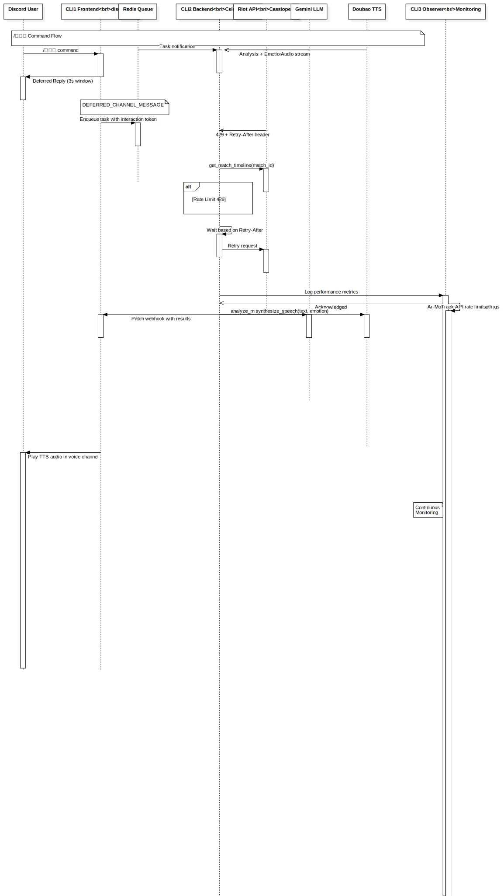

Interaction by Mermaid
UMLInteraction
Untitled
::
Collaboration by Mermaid
::
Interaction by Mermaid
Description
none
Diagrams

Sequence Diagram by Mermaid
Fragments
(CombinedFragment)
Participants
Discord User
CLI1 Frontend<br/>discord.py
Redis Queue
CLI2 Backend<br/>Celery Worker
Riot API<br/>Cassiopeia
Gemini LLM
Doubao TTS
CLI3 Observer<br/>Monitoring
Messages
Task notification (Redis Queue→CLI2 Backend<br/>Celery Worker)
Analysis + Emotion Tags (Gemini LLM→CLI2 Backend<br/>Celery Worker)
Audio stream (Doubao TTS→CLI2 Backend<br/>Celery Worker)
/讲道理 command (Discord User→CLI1 Frontend<br/>discord.py)
Deferred Reply (3s window) (CLI1 Frontend<br/>discord.py→Discord User)
Enqueue task with interaction token (CLI1 Frontend<br/>discord.py→Redis Queue)
429 + Retry-After header (Riot API<br/>Cassiopeia→CLI2 Backend<br/>Celery Worker)
MatchTimeline data (Riot API<br/>Cassiopeia→CLI2 Backend<br/>Celery Worker)
get_match_timeline(match_id) (CLI2 Backend<br/>Celery Worker→Riot API<br/>Cassiopeia)
Wait based on Retry-After (CLI2 Backend<br/>Celery Worker→CLI2 Backend<br/>Celery Worker)
Retry request (CLI2 Backend<br/>Celery Worker→Riot API<br/>Cassiopeia)
Log performance metrics (CLI2 Backend<br/>Celery Worker→CLI3 Observer<br/>Monitoring)
Acknowledged (CLI3 Observer<br/>Monitoring→CLI2 Backend<br/>Celery Worker)
Track API rate limits (CLI3 Observer<br/>Monitoring→CLI3 Observer<br/>Monitoring)
Monitor Redis queue depth (CLI3 Observer<br/>Monitoring→CLI3 Observer<br/>Monitoring)
Analyze llm_debug_wrapper logs (CLI3 Observer<br/>Monitoring→CLI3 Observer<br/>Monitoring)
Patch webhook with results (CLI2 Backend<br/>Celery Worker→CLI1 Frontend<br/>discord.py)
synthesize_speech(text, emotion) (CLI2 Backend<br/>Celery Worker→Doubao TTS)
analyze_match(timeline_data) (CLI2 Backend<br/>Celery Worker→Gemini LLM)
Play TTS audio in voice channel (CLI1 Frontend<br/>discord.py→Discord User)
Send analysis + Join voice (CLI1 Frontend<br/>discord.py→Discord User)
Properties
Name
Value
name
Interaction by Mermaid
stereotype
null
visibility
public
isReentrant
true
Owned Elements
Sequence Diagram by Mermaid